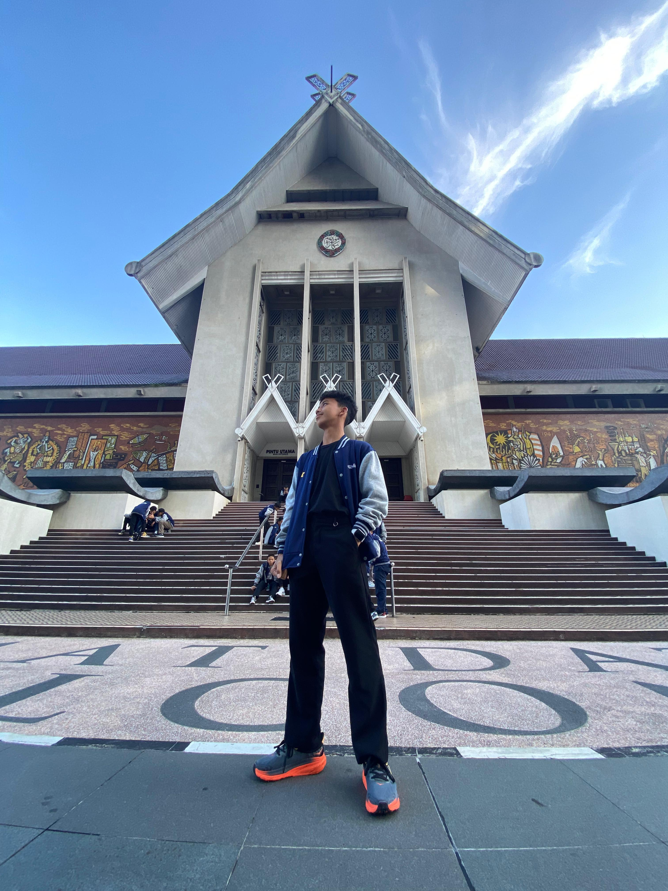
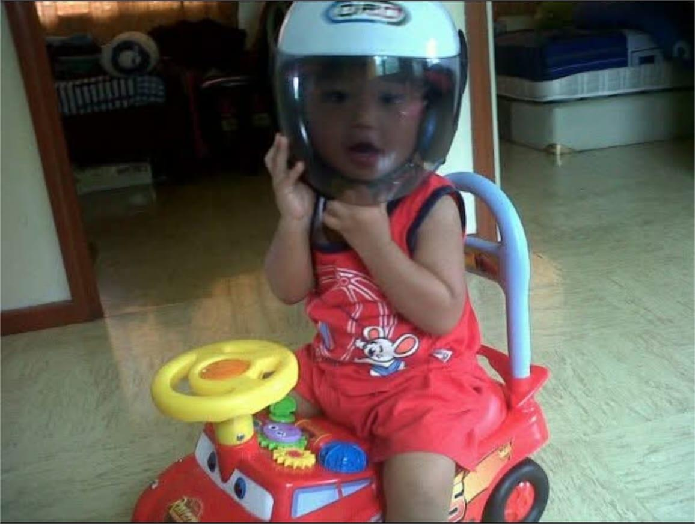
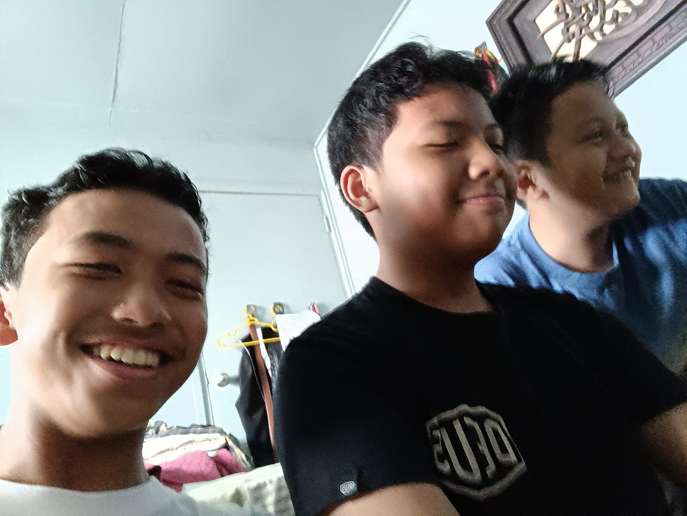
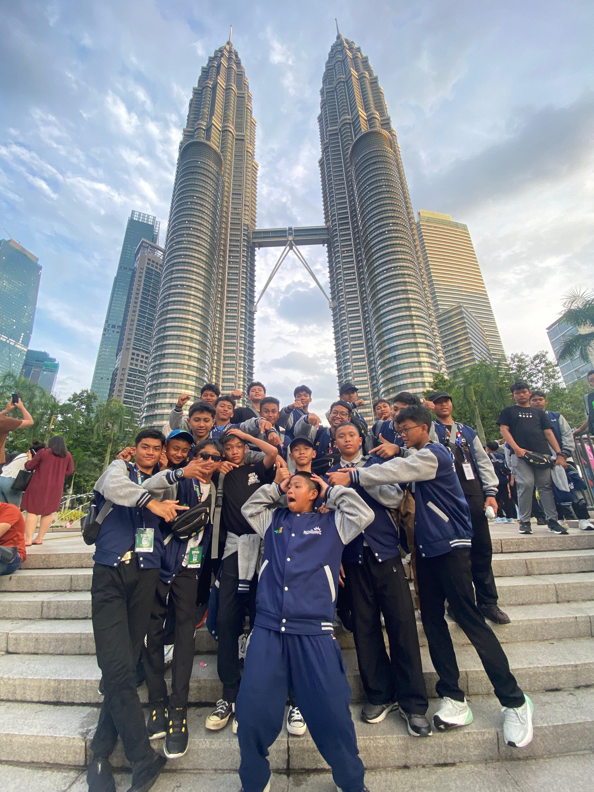

I'm Naufal Krisna Adyatma. I made this website you know. This is the product of my free time ('-'). Cool? I knoww it is. If you want to send any message, critics or complement just scroll down, click the 'Here vro!' button and type it! Also, you can see some documentaries of my journey beloww. Use dekstop view for best experience. Thx for visiting btw.

Yeea, some life recap. hhe

I was born in in 2010. 100% not a Gen Alpha. When I was little, I was pretty brave. I liked to explore, to look around with wide curious eyes, and to try new little things with my small hands. The world felt big and colorful, and every day was a new adventure waiting for me.

When I entered my elementary school era, I found something that unreplacable in my life. I found my best friend and became part of KEREN. Just the three of us, inseparable. Then, School felt more like a fun place than anything else. I was simply having fun, meeting friends, and enjoying every moment. At the same time, I slowly started to take responsibilities. It was a phase filled with friendship, laughter, and the feeling of growing.

When I stepped into junior high school, it felt like I was finally living inside the dreams I used to imagine. This was the era where I started doing the things I once only wished for, even the ones that scared me. I chose to challenge myself, to face my fears instead of avoiding them, and to take risks even when I wasnt completely sure of the outcome. Along the way, I understood that big success never comes easily, it always asks for big sacrifice. I also learned to be grateful for what I have and to make the most of every opportunity in front of me.